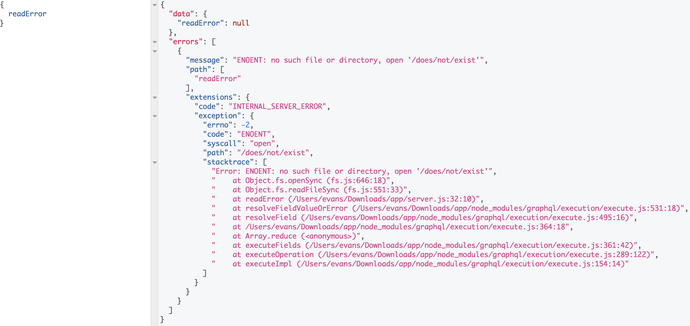
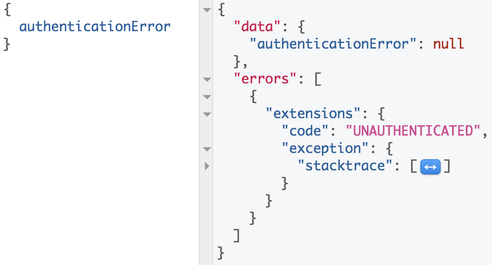
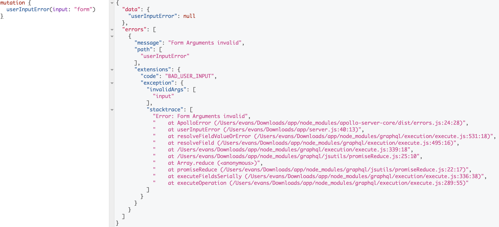

Error handling
Apollo server provides a couple predefined errors, including
AuthenticationError, ForbiddenError, UserInputError and a generic
ApolloError. These errors are designed to enhance errors thrown before and during GraphQL execution. The provided errors focus on debugging a Apollo server as well as enabling the client to take specific action based on an error.
When an error occurs in Apollo server both inside and outside of resolvers, each error inside of the errors array will contain an object at extensions that contains the information added by Apollo server.
Default information
The first step to improving the usability of a server is providing the error stack trace by default. The following example demonstrates the response returned from Apollo server with a resolver that throws a node SystemError.
const {
ApolloServer,
gql,
} = require('apollo-server');
const typeDefs = gql`
type Query {
readError: String
}
`;
const resolvers = {
Query: {
readError: (parent, args, context) => {
fs.readFileSync('/does/not/exist');
},
},
};
The response will return:

To disable stacktraces for production, pass
debug: falseto the Apollo server constructor or set theNODE_ENVenvironment variable to ‘production’ or ‘test’. Note that this will make the stacktrace unavailable to your application. If you want to log the stacktrace, but not send it in the response to the client, see Masking and logging errors below.
Codes
In addition to stacktraces, Apollo Server’s exported errors specify a human-readable string in the code field of extensions that enables the client to perform corrective actions. In addition to improving the client experience, the code field allows the server to categorize errors. For example, an AuthenticationError sets the code to UNAUTHENTICATED, which enables the client to reauthenticate and would generally be ignored as a server anomaly.
const {
ApolloServer,
gql,
AuthenticationError,
} = require('apollo-server');
const typeDefs = gql`
type Query {
authenticationError: String
}
`;
const resolvers = {
Query: {
authenticationError: (parent, args, context) => {
throw new AuthenticationError('must authenticate');
},
},
};
The response will return:

Augmenting error details
When clients provide bad input, you may want to return additional information
like a localized message for each field or argument that was invalid. The
following example demonstrates how you can use UserInputError to augment
your error messages with additional details.
const {
ApolloServer,
UserInputError,
gql,
} = require('apollo-server');
const typeDefs = gql`
type Mutation {
userInputError(input: String): String
}
`;
const resolvers = {
Mutation: {
userInputError: (parent, args, context, info) => {
if (args.input !== 'expected') {
throw new UserInputError('Form Arguments invalid', {
invalidArgs: Object.keys(args),
});
}
},
},
};
The response will return:

Other errors
If you need to define other error codes that are specific to your
application, you can use the base ApolloError class.
new ApolloError(message, code, additionalProperties);
Masking and logging errors
The Apollo server constructor accepts a formatError function that is run on each error passed back to the client. This can be used to mask errors as well as for logging.
This example demonstrates masking (or suppressing the stacktrace):
const server = new ApolloServer({
typeDefs,
resolvers,
formatError: error => {
console.log(error);
return new Error('Internal server error');
// Or, you can delete the exception information
// delete error.extensions.exception;
// return error;
},
});
server.listen().then(({ url }) => {
console.log(`🚀 Server ready at ${url}`);
});